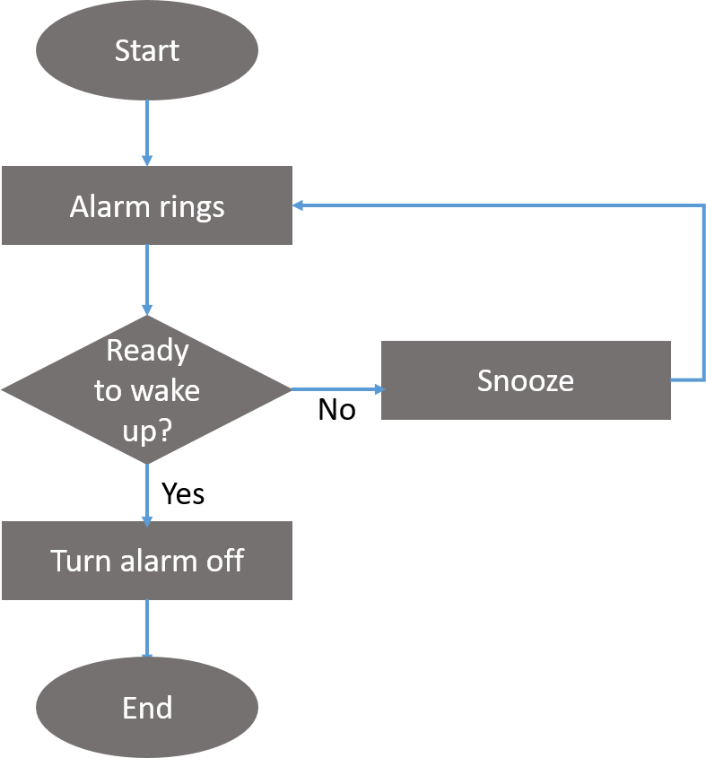
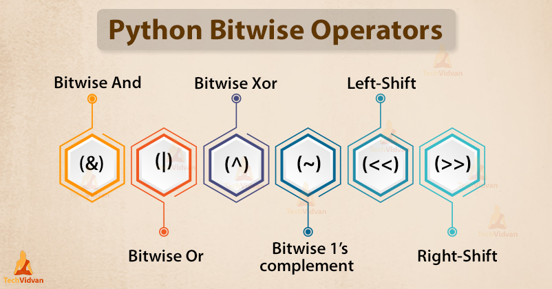
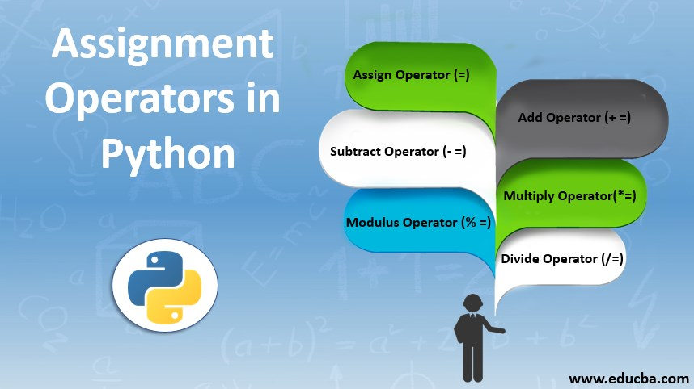
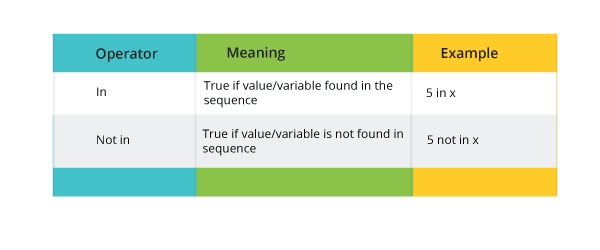
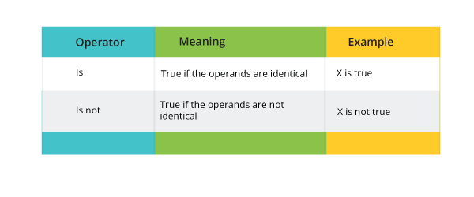
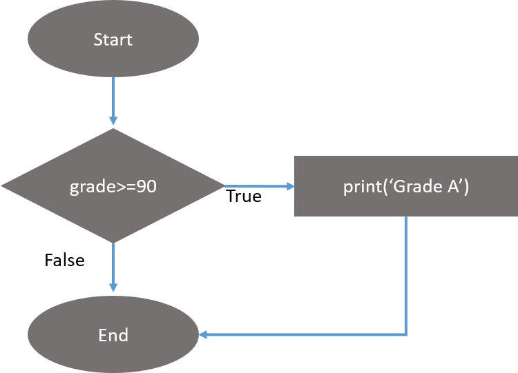
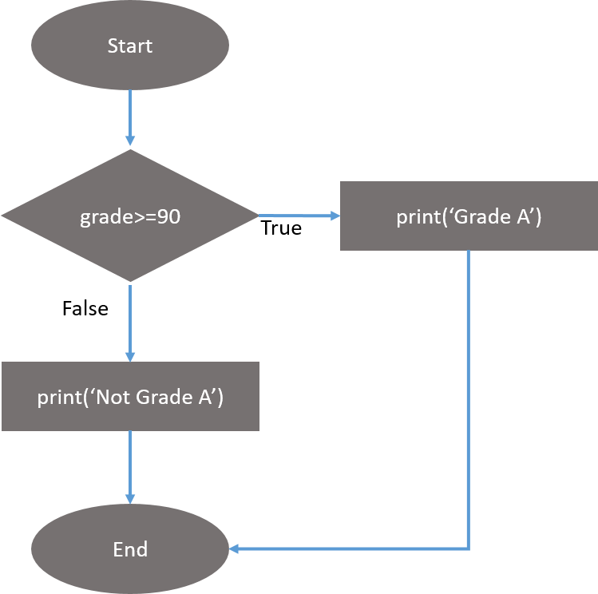
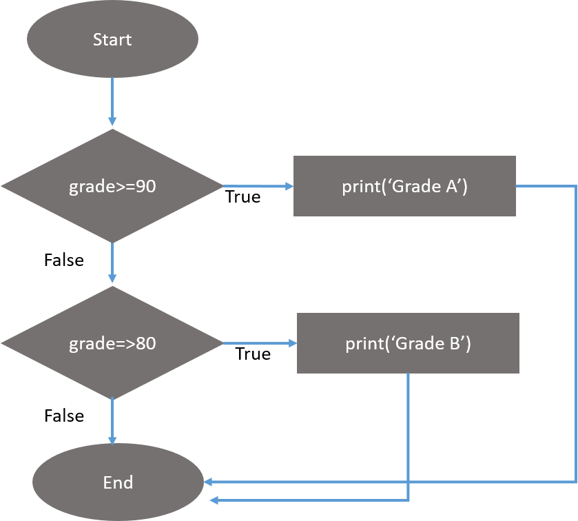

Flow Control
Contents
Flow Control¶
Decision Control Statement¶
So you know the basics of individual instructions and that a program is just a series of instructions. But the real strength of programming isn’t just running (or executing) one instruction after another. Based on how the expressions evaluate, the program can decide to skip instructions, repeat them, or choose one of several instructions to run.
In fact, you almost never want your programs to start from the first line of code and simply execute every line, straight to the end. decision control statements can decide which Python instructions to execute under which conditions.
These decision control statements directly correspond to the symbols in a flowchart, so we’ll provide flowchart versions of the code discussed in this chapter. Figure below shows a flowchart for what to do if your alarm rings in the morning. Follow the path made by the arrows from Start to End.

In a flowchart, there is usually more than one way to go from the start to the end. The same is true for lines of code in a computer program. Flowcharts represent these branching points with diamonds, while the other steps are represented with rectangles. The starting and ending steps are represented with oval.
But before you learn about decision control statements, you first need to learn how to represent those yes and no options, and you need to understand how to write those branching points as Python code. To that end, let’s explore comparison operators, Boolean/logical operators, bitwise operator, assignment operator, membership operator, identity operator.
Logical Operator¶

Bitwise Operator¶
Bitwise operators are operators in computer programming that manipulate the bits (binary digits) of a value or variable. These operators are used to perform operations on individual bits of integers or other binary values.

a = 111 # binary representation: 01101111
b = 101 # binary representation: 01100101
# bitwise AND
c = a & b # result: 01100101 (101 in decimal)
print(c)
# bitwise OR
c = a | b # result: 01101111 (111 in decimal)
print(c)
# bitwise XOR
c = a ^ b # result: 00001010 (10 in decimal)
print(c)
# bitwise NOT
c = ~a # result: -112 (in decimal, since Python uses two's complement for signed integers)
print(c)
# left shift
c = a << 2 # result: 10111100 (188 in decimal)
print(c)
# right shift
c = a >> 2 # result: 00011011 (27 in decimal)
print(c)
101
111
10
-112
444
27
Assignment Operator¶

x = 5
x += 3
print(x) # Output: 8
y = 10
y -= 4
print(y) # Output: 6
z = 7
z *= 2
print(z) # Output: 14
a = 15
a /= 3
print(a) # Output: 5.0
b = 20
b %= 7
print(b) # Output: 6
8
6
14
5.0
6
Membership Operator¶

Identity Operator¶

Blocks of Code¶
Lines of Python code can be grouped together in one or more blocks. You can tell when a block begins. Indentation means 4 spaces or 1 Tab.
There are three rules for blocks.
Blocks begin when the indentation increases.
Blocks can contain other blocks.
Blocks end when the indentation decreases to zero or to a containing block’s indentation.
Blocks are easier to understand by looking at some indentation. You might be seeing it on regular basis in YouTube Comments and Instagram comments and their replies. It is called indentation.
Selection / Conditional Branching Statement¶
Using all operators we can construct statements.
Now, let’s explore the most important piece of Decision control: the statements themselves. The statements represent the diamonds you saw in the flowchart above, and they are the actual decisions your programs will make.
Decision control statements are used to control the flow of the program based on certain conditions. There are three types of decision control statements in Python: if statements, if-else statements, and if-elif-else statements.
1. if statements:¶
An if statement is used to execute a block of code if a condition is true. Here’s the basic syntax:
In Python, an if statement consists of the following:
The if keyword
• A condition (that is, an expression that evaluates to True or False)
• A colon(:)
• Starting on the next line, an indented block of code (called the if clause)
For example: let’s say you have some code that checks which grade is scored by a person.
grade = 93
if grade >= 90:
print('Grade A')
Grade A

2. if-else statements:¶
An if-else statement is used to execute a block of code if a condition is true, and another block of code if the condition is false. Here’s the basic syntax:
An else statement doesn’t have a condition, and in code, an else statement always consists of the following:
• The else keyword
• A colon(:)
• Starting on the next line, an indented block of code (called the else clause)
Returning to above example, let’s look at some code that uses an else statement to check if the scored grade is Grade A or not.
grade = 88
if grade>=90:
print('Grade A')
else:
print('Not Grade A')
Not Grade A

3. if-elif-else statements:¶
An if-elif-else statement is used to execute a block of code if a condition is true, or another block of code if another condition is true, or a third block of code if neither of the previous conditions is true. Here’s the basic syntax:
The elif statement is an “else if” statement that always follows an if or another elif statement. It provides another condition that is checked only if all of the previous conditions were False. In code, an elif statement always consists of the following:
• The elif keyword
• A condition (that is, an expression that evaluates to True or False)
• A colon(:)
• Starting on the next line, an indented block of code (called the elif clause)
Let’s add an elif to our grade checker to see this statement in action.
grade = 89
if grade>=90:
print('Grade A')
elif grade>=80:
print('Grade B')
else:
print('No Grade')
Grade B

Nested if¶
A nested if statement is a type of conditional statement that includes one if statement inside another if statement. The inner if statement is executed only if the outer if statement is true. Here’s an example of a nested if statement in Python:
x = 5
y = 10
if x > 0:
if y > 0:
print("Both x and y are positive.")
else:
print("x is positive but y is not.")
else:
print("x is not positive.")
Both x and y are positive.
Conclusion¶
By using expressions that evaluate to True or False (also called conditions), you can write programs that make decisions on what code to execute and what code to skip.
These decision control statements will let you write much more intelligent programs.
Practice Questions¶
Difficulty Level : Easy¶
Q. Fill in the blanks with the boolean operators in the following code snippet to get the desired output :
Code Snippet |
Output |
|---|---|
True__True |
True |
(1>2)__(55<54) |
False |
(55/2)__True |
True |
__(10>5) |
False |
## your code ##
Q. Create a program that asks the user to enter the net worth of Mark Zuckerberg and display the specific message as mentioned in the table below according to the input from the user.
Note : Make sure you enter the appropriate message in input function that assists user in entering the values.
Note : Do not enter commas when entering the number.
Net Worth |
Display |
|---|---|
=5400000000 |
That’s 54.5 billion |
<5400000000 |
That’s not much |
>5400000000 |
I’ll make more when I graduate |
## your code ##
Q. Create a program to accept the cost price of a bike and display the total price of the bike including the tax to be paid according to the following criteria :
Note : Make sure you enter the appropriate message in input function that assists user in entering the values.
Cost Price(in Rs.) |
Tax |
|---|---|
>100000 |
15% |
>50000 and <= 100000 |
10% |
<=50000 |
5% |
## your code ##
Q. A student needs to have an attendance of atleast 75% to be allowed to sit for the exams. Create a program to check if the student satisfies this attendance criteria to sit for the exams by taking 2 inputs from the user and display the necessary output message along with the attendance in percentage using the print function.
Note : Make sure you enter the appropriate message in input function that assists user in entering the values.
Hint : Take the user inputs for the following :
Number of classes held
Number of classes attended.
## your code ##
Q. Write a code to check whether given number is even or odd.Take number as input.
## your code ##
Difficulty Level : Medium¶
Q. Create a program that displays the wages of worker depending on their age, gender (‘M’, ‘F’) and number of days they work accodring to the criteria mentioned in the table below:
Note : Make sure you enter the appropriate message in input function that assists user in entering the values.
Age Group |
Gender |
Daily Wages(in Rs.) |
|---|---|---|
>=18 and < 30 |
M |
Rs 700/day |
F |
Rs 750/day |
|
>=30 and <=40 |
M |
Rs 800/day |
F |
Rs 850/day |
## your code ##
Q. Create a program to check if a given year is leap year or not.
Note : Make sure you enter the appropriate message in input function that assists user in entering the values.
Note : Google to check all the conditions for a year to be a leap year.
## your code ##
Difficulty Level : Hard¶
Q. Create a program that accepts the number of days from the user and calculates the charge for library according to the following table :
Note : Make sure you enter the appropriate message in input function that assists user in entering the values.
Number of Days |
Cost / day |
|---|---|
First 5 days |
Rs 2/day |
6 to 10 days |
Rs 3/day |
11 to 15 days |
Rs 4/day |
After 15 days |
Rs 5/day |
## your code ##
Q. Create a program that accepts the electric units from user and calculates the bill according to the following rates:
Note : Make sure you enter the appropriate message in input function that assists user in entering the values.
Example :
Number of Unit :550
Total Bill : 0 +400+1250 = 1650
Range of Units |
Cost / unit |
|---|---|
First 100 units |
Free |
Next 200 |
Rs 2/unit |
Above 300 |
Rs 5/unit |
## your code ##